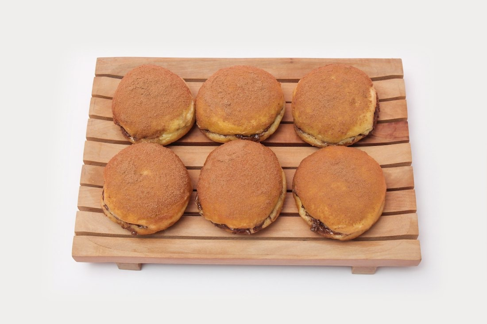
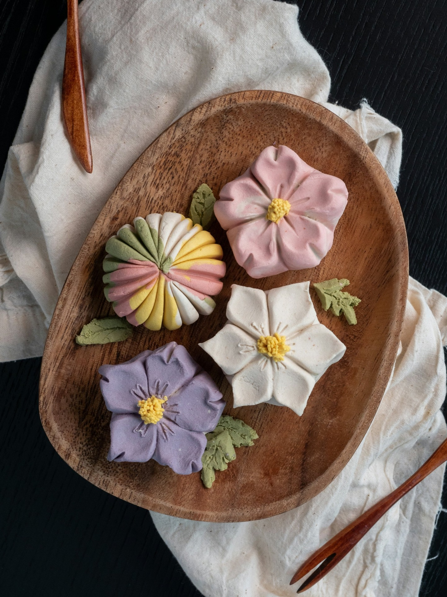
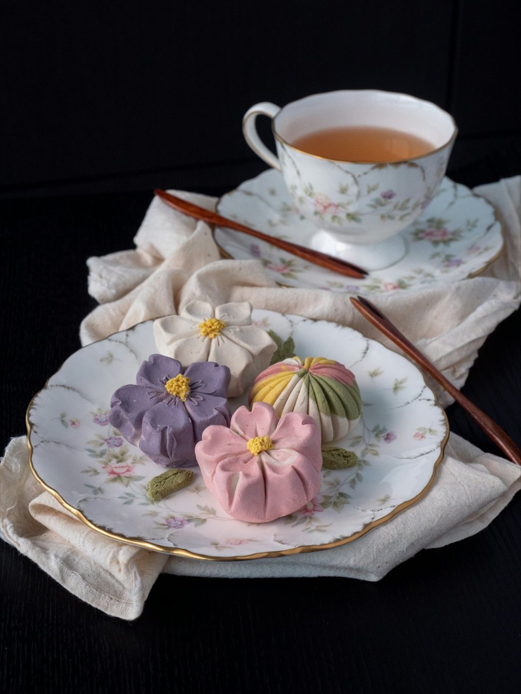
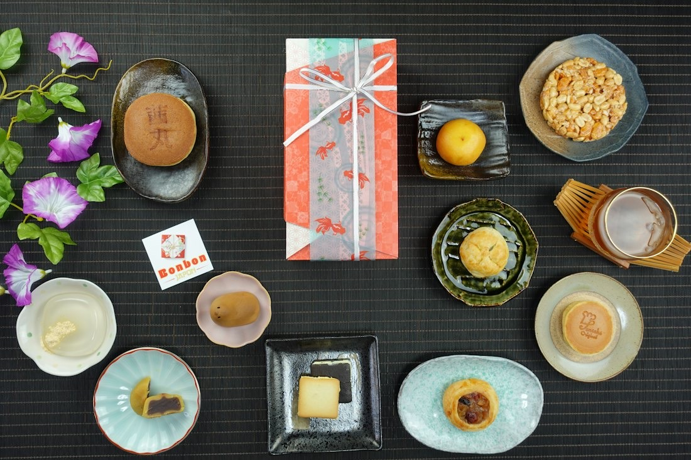
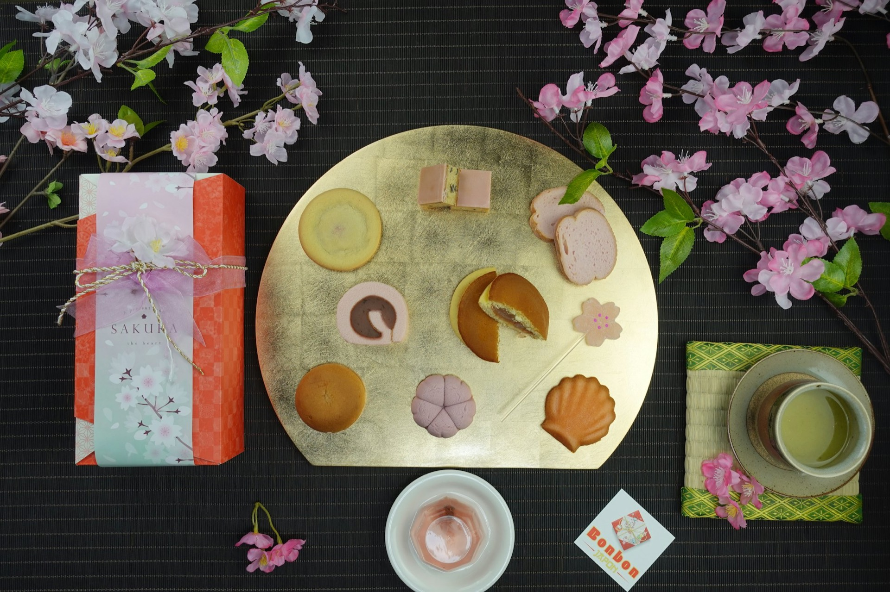

生どら焼
いちご、モンブラン、コーヒー、抹茶。

手作りの和菓子 埼玉県三郷市
手作りの和菓子を製造販売しているお店です。伝統製法の和菓子から新製法の和菓子まで、他のお店にはないオリジナリティー豊かな和菓子をお楽しみください。
上生菓子は、毎月かわります
春桜
やわらかな桃色の、花びら五枚。
上生菓子の3Dイメージです。実際のお菓子とは異なります
上生菓子は、季節に合わせて当店の職人が一つひとつ心を込めて作った伝統の和菓子です。お茶席にはもちろん、大事なお客様をおもてなしするには無くてはならない品です。
どら焼や生どら焼、饅頭、煉切・雪平・きんとん・外郎まで。お取り寄せは、電話・FAX・メールで承ります。

いちご、モンブラン、コーヒー、抹茶。

煉切・雪平・きんとん・外郎・流し物など。

ミニ黒糖饅頭、紅白饅頭、季節限定のおさつ饅頭も。

…
| 営業時間 | 9:00〜18:30 |
|---|---|
| 定休日 | 毎週火曜日・第3月曜日 |
お取り寄せのご注文は、メール・電話・FAXで承ります。